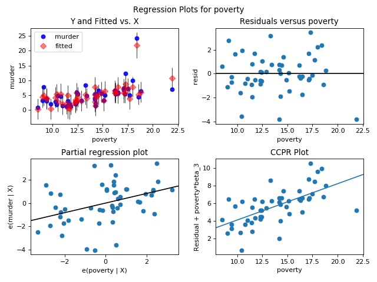

statsmodels.graphics.regressionplots.plot_regress_exog¶
-
statsmodels.graphics.regressionplots.plot_regress_exog(results, exog_idx, fig=None)[source]¶ Plot regression results against one regressor.
This plots four graphs in a 2 by 2 figure: ‘endog versus exog’, ‘residuals versus exog’, ‘fitted versus exog’ and ‘fitted plus residual versus exog’
- Parameters
- resultsresult instance
result instance with resid, model.endog and model.exog as attributes
- exog_idxint or str
Name or index of regressor in exog matrix
- figMatplotlib figure instance, optional
If given, this figure is simply returned. Otherwise a new figure is created.
- Returns
- figmatplotlib figure instance
Examples
Load the Statewide Crime data set and build a model with regressors including the rate of high school graduation (hs_grad), population in urban areas (urban), households below poverty line (poverty), and single person households (single). Outcome variable is the muder rate (murder).
Build a 2 by 2 figure based on poverty showing fitted versus actual murder rate, residuals versus the poverty rate, partial regression plot of poverty, and CCPR plot for poverty rate.
>>> import statsmodels.api as sm >>> import matplotlib.pyplot as plot >>> import statsmodels.formula.api as smf
>>> fig = plt.figure(figsize=(8, 6)) >>> crime_data = sm.datasets.statecrime.load_pandas() >>> results = smf.ols('murder ~ hs_grad + urban + poverty + single', ... data=crime_data.data).fit() >>> sm.graphics.plot_regress_exog(results, 'poverty', fig=fig) >>> plt.show()
(Source code, png, hires.png, pdf)

{kind=link}
{kind=link}